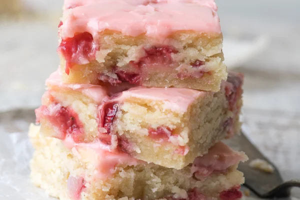

Home

If you could only have one strawberry dessert this season, these fruity little strawberry bars would have to be the one, they’re ridiculously easy to throw together and completely irresistible…take it from me, I had my fork in one before I could finish my photo shoot. That’s always a sign of a good recipe! There’s nothing dry or crumbly about them, they melt in the mouth like a great blondie should. Only instead of nuts and chocolate you’ve got juicy strawberries and tart lemon. Yum.
- 1 cup unsalted butter, at room temperature
- 3/4 cup sugar
- 1 large egg
- 1/4 cup fresh squeezed lemon juice
- 2 1/4 cups all purpose flour
- 1/2 tsp baking powder
- 1/2 tsp salt
- 1 cup diced fresh strawberries
Instructions:
- Preheat the oven to 350F.
- Line a 9 inch square baking pan with parchment paper with long edges. This is optional but will help you lift out the blondies for easy glazing and slicing later.
- Cream the butter and sugar until fluffy. Beat in the egg.
- When the egg is fully incorporated, beat in the lemon juice. The lemon juice will probably not completely incorporate at this point, that's ok.
- Whisk together the flour, baking powder, and salt, and add to the wet ingredients, mixing until no more dry flour is present.
- Gently fold in the diced strawberries. Spread the mixture into your pan and spread out as evenly as possible. The dough is thick, so take your time. I like to use a large offset spatula for this job.
- Bake for 30-35 minutes, just until starting to turn golden around the edges and the center is set. A toothpick inserted in the center will be moist but not wet. Don't over-bake these, or they will dry out. Let cool on a rack.
- Trim the strawberries for the glaze and puree in a small food processor. Strain the puree through a small strainer to get 1 Tbsp of puree. Whisk together the sugar, puree, and lemon juice until no lumps remain. If your glaze is too thin, add a touch more sugar. If it's too thick, add more lemon juice.
- Spread the glaze over the cooled blondies. Let the glaze set before slicing.